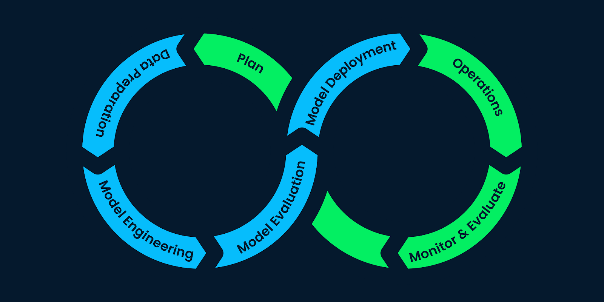
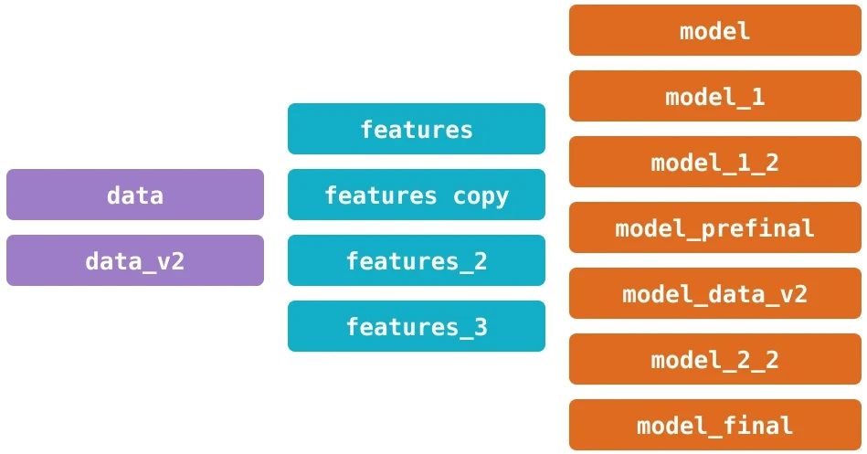

Introduction
In the first classes, we discussed the ML lifecycle and how building models with adequate performance requires an iterative process of continuous improvement.

Furthermore, in the last two classes we saw how model performance is expected to degrade over time and explored alternatives for detecting data and model drift. This way we can gather feedback from the model's performance, analyze the results, and make necessary adjustments to enhance the model's accuracy, enabling continuous learning and improvement.
This process of seeking improvement involves several steps. It will be necessary to use tools that allow recording and tracking the source code produced and results of experiments.
Question! 1
Answer!
Git and MLflow!
But beyond the source code and experiment results, an important part of every ML product lifecycle involves data.
A well-known phrase in the ML field is:
Famous sentence in ML!
More data beats clever algorithms, but better data beats more data.
This is a pretty powerful phrase and reminds us of the importance of data in building ML products.
Sometimes we focus a lot on studying and finding revolutionary methods; while having more data, more features or performing transformations on the data may have the power to generate more significant impacts on the model performance.
Nonetheless, we rarely have the best version of our data at the beginning of the project. In the same way that it is necessary to make several rounds of modifications to the methods and parameters used, it is also necessary to change the data iteratively: to build new features, find new data sources, or collect data in greater quantity.
We easily end up in a situation where the combination of experiments and variations in the data are so great that we lose the ability to track the results and reproduce the experiments.

Hence the importance of exploring tools for data versioning, our main topic in this class.
Data versioning
Data versioning plays a critical role in ensuring reproducibility, traceability, and accountability throughout the entire ML pipeline.
Advance to the next topic to learn by doing!